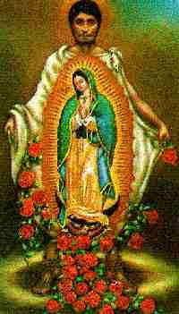

|  | December 12 on the Roman Catholic Calendar is the feast
day in honor of Our Lady of Guadalupe, and press reports indicated
that in the year 1996, perhaps two million people made the pilgrimage to
Mexico City to observe the festival. The number of pilgrims each year is
thought to exceed 10 million, making it nearly the most visited Catholic
site in the world, second only to the Vatican itself.
The following sites also have lots of good information on the "miraculous" image of the Aztec goddess of motherhood, Tonantzin, ah... that is to say of the "Virgin of Guadalupe" that is attracting so much attention and adoration from Roman Catholics.
|